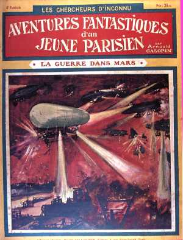

Couverture du n° des aventures fantastiques d'un jeune parisien, sur les appareils hyperpuissants de
"La guerre dans mars"

Parution de l'histoire de fiction "La Guerre dans Mars", où l'on voit en effet l'ardente
mêlée de races étranges, la cohue frémissante de hordes malicieuses et cruelles, le formidable et tumultueux
tourbillonnement d'une Humanité nouvelle plus avancée que la nôtre et suppléant à la force physique par de fabuleux
appareils 100 fois plus meurtriers que nos modernes machines de guerre.Galopin,
Arnould : "La Guerre dans Mars", Les Chercheurs d'inconnu : aventures fantastiques d'un jeune Parisien, n°
6, décembre 1908, 32 p. Illustration de Tallandier, E. Board.